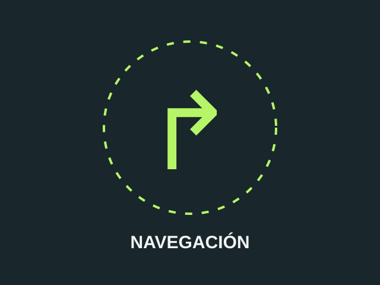
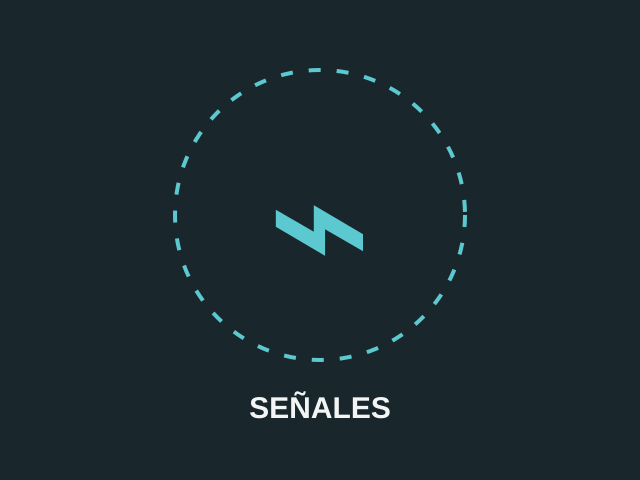
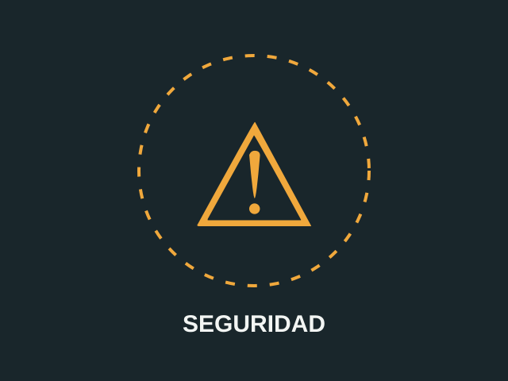

Giros inteligentes
Patrones de vibración diferenciados para indicar giros a la izquierda y derecha.
HaptiRide propone una experiencia de navegación para ciclistas con señales hápticas intuitivas, pensada para reducir las distracciones y fomentar una movilidad urbana más segura.
Somos el equipo detrás de HaptiRide, una propuesta que integra diseño centrado en las personas, accesibilidad y tecnología para mejorar la experiencia de los ciclistas.
Facilitar una navegación ciclista más intuitiva y segura mediante indicaciones hápticas claras y accesibles.
Contribuir a ciudades donde desplazarse en bicicleta sea una opción cómoda, inclusiva y sostenible.
ODS relacionados: ODS 3, Salud y bienestar, y ODS 11, Ciudades y comunidades sostenibles.
Una forma de recibir indicaciones sin depender constantemente de mirar una pantalla.
Patrones de vibración diferenciados para indicar giros a la izquierda y derecha.
Una señal estable para reconocer cuándo seguir por la ruta.
Vibraciones de advertencia para llamar la atención ante situaciones que requieren precaución.
Una señal específica para reconocer el final del recorrido.
Selecciona un patrón para visualizar su secuencia. Esta demostración es ilustrativa.
Patrones probados: 0
El proyecto explora cómo comunicar instrucciones de navegación mediante vibraciones, con el objetivo de disminuir la necesidad de consultar el teléfono durante el trayecto.



Video
Ejemplos ilustrativos de necesidades de usuarios. Sustituir por citas reales de entrevistas antes de presentar resultados de investigación.
“Me gustaría recibir las indicaciones sin tener que revisar el celular en cada cruce.”
“Las alertas deberían distinguirse fácilmente para saber cuándo debo prestar más atención.”
¿Tienes comentarios sobre el prototipo o quieres compartir tu experiencia como ciclista? Déjanos un mensaje.
Proyecto académico: HaptiRide
El formulario es una demostración local y no envía datos a un servidor.